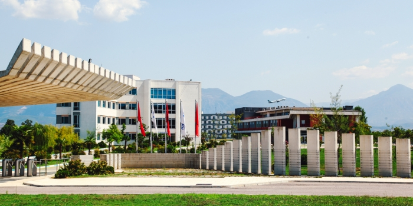

Ka të dhëna që universiteti është pjesë e lëvizjes Gülen,që është aktive në Shqipëri që prej vitit 1992, dhe operon një numër shkollash (Kolegjet Turke) nepërmjet kompanisë Turgut Özal Education Company. Universiteti Epoka ka nënshkruar marrëveshje bashkëpunimi (memo) me universitete në vende të ndryshme. Në Shqipëri operon në bashkëpunim me Universitetin Bedër, të themeluar nga Komuniteti Mysliman i Shqipërisë.Rektori aktual i Universitetit Bedër, Dr. Ferdinand Gjana, ka qenë më parë zv. rektor i Universitetit Epoka.
